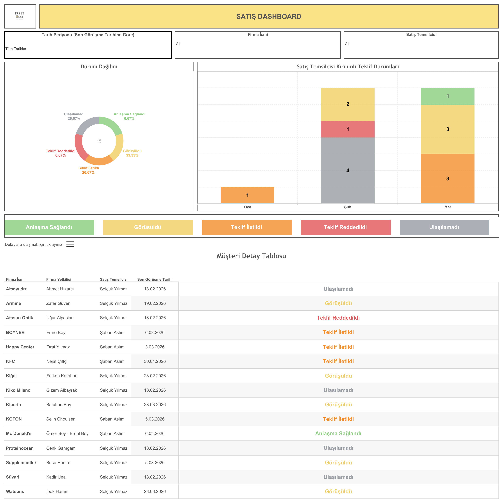

Canlı Rapora Erişin
Güncel satış pipeline verilerini Tableau üzerinde interaktif olarak görüntüleyin.
Dashboard Hakkında
Ne Gösterir?
Satış Dashboard, potansiyel müşterilere yapılan satış görüşmelerinin durumunu ve aylık ilerlemeyi takip eder. Satış temsilcisi kırılımıyla teklif süreçleri ve anlaşma durumları analiz edilir.
- Durum Dağılımı: Anlaşma Sağlandı, Görüşüldü, Teklif İletildi, Teklif Reddedildi ve Ulaşılamadı kategorilerinde pasta grafik
- Satış Temsilcisi Kırılımlı Teklif Durumları: Aylık bazda satış temsilcisi performansı
- Müşteri Detay Tablosu: Firma ismi, firma yetkilisi, satış temsilcisi ve son görüşme tarihi
- Filtreler: Tarih periyodu (son görüşme tarihine göre), firma ismi ve satış temsilcisi
Dashboard Önizleme

Satış Dashboard — Tableau